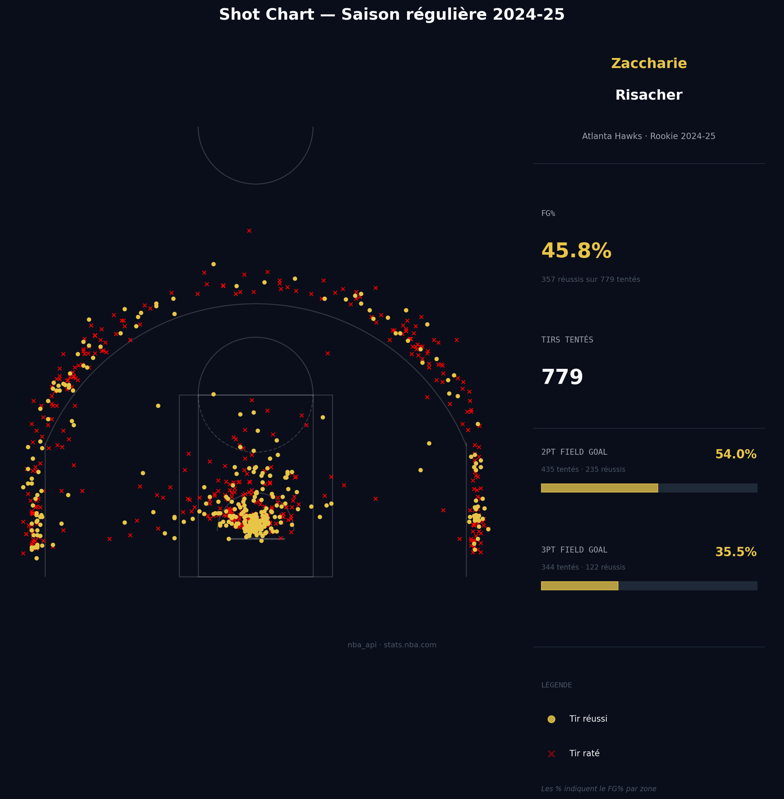
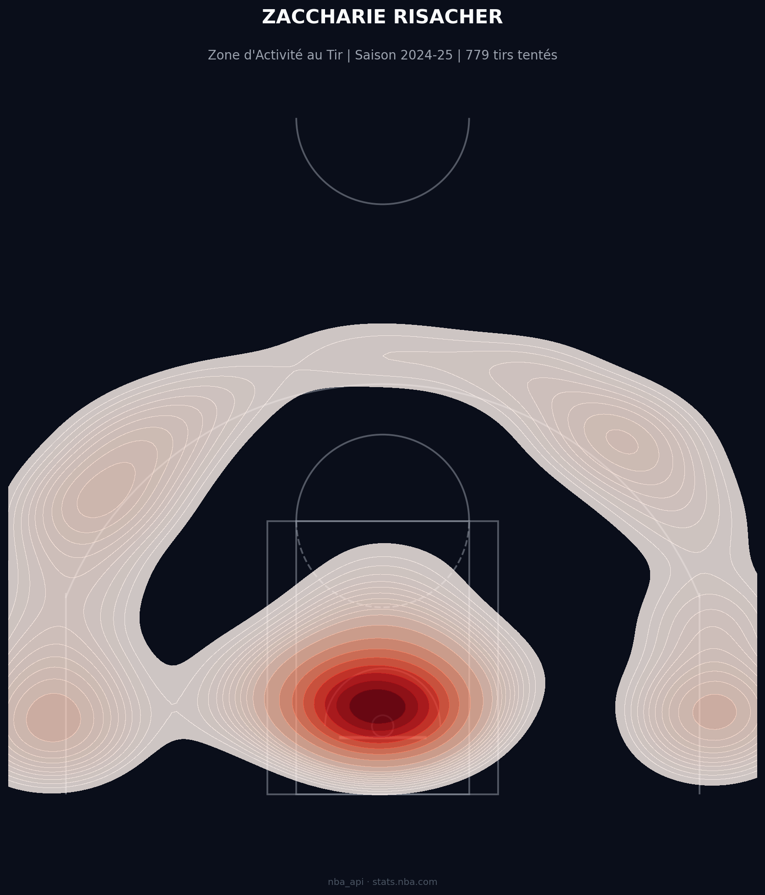
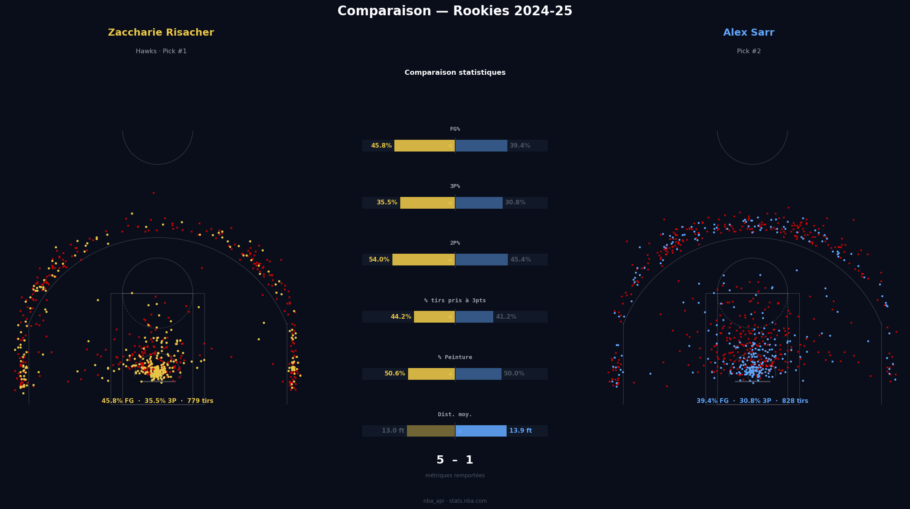
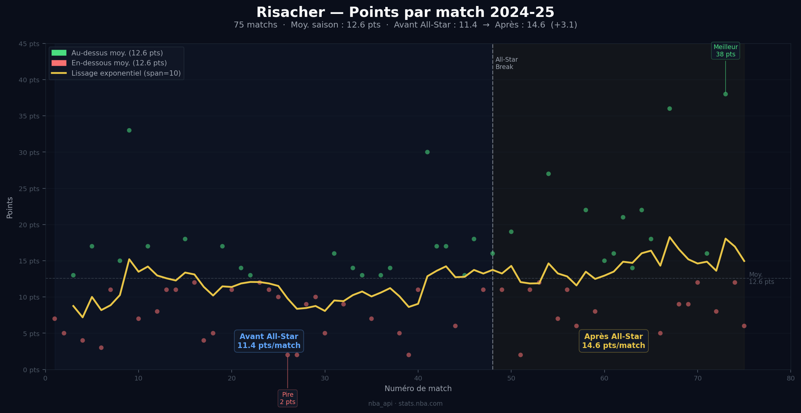
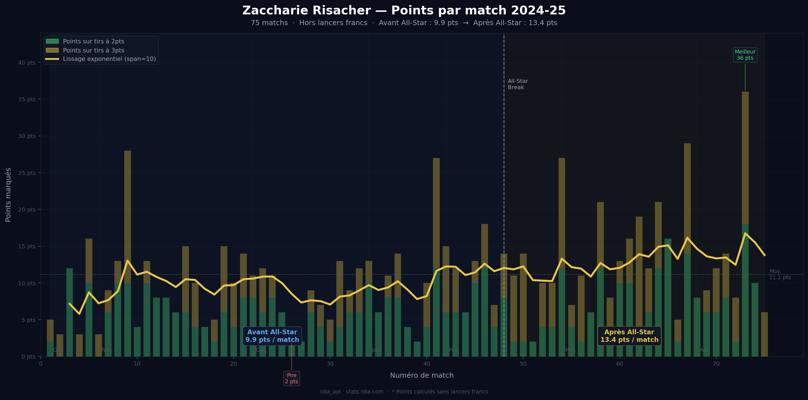
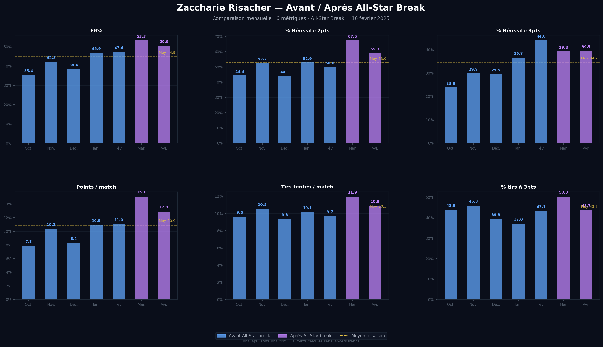
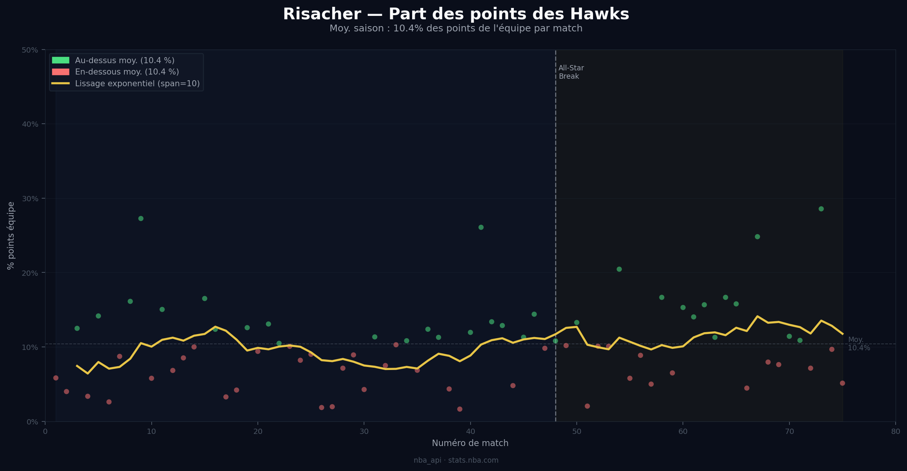
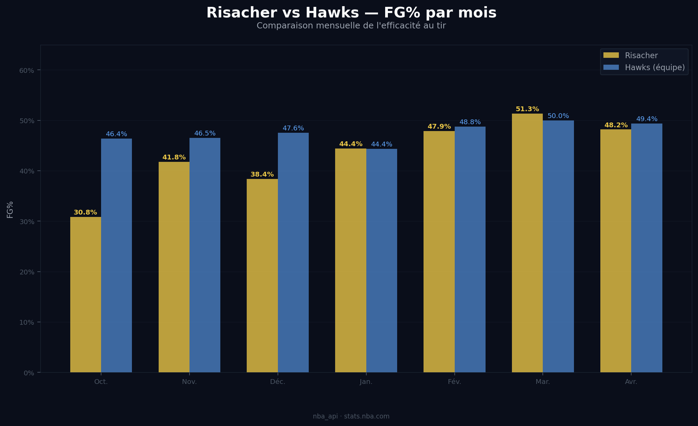
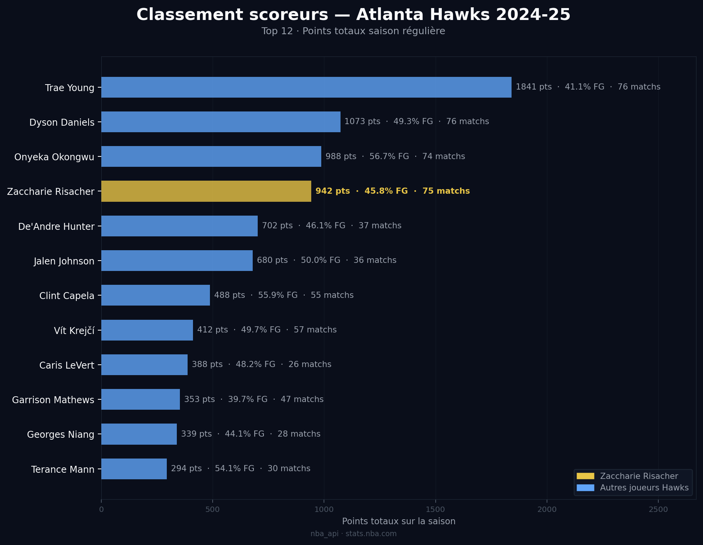
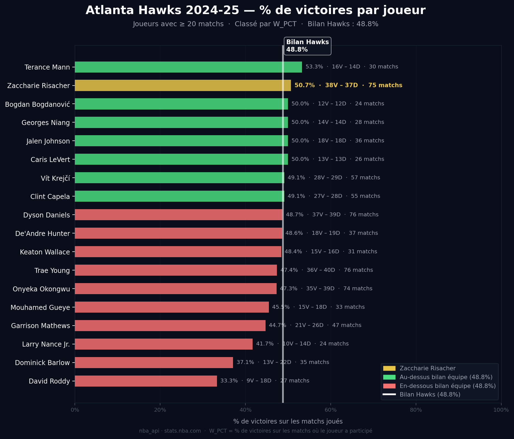

Analyse de la saison rookie 2024-25
Ce rapport a été conçu comme un projet personnel d'exploration de données. Les statistiques présentées sont issues de l'API officielle de la NBA. À noter : les lancers francs ne sont pas inclus dans ce jeu de données ; l'analyse se concentre exclusivement sur le Field Goal et la répartition spatiale des tirs.
Le 26 juin 2024, Zaccharie Risacher est entré dans l'histoire du basket français et de la NBA en étant sélectionné en
première position de la Draft par les Atlanta Hawks. Succédant à Victor Wembanyama, il confirme l'ascension fulgurante
des talents tricolores outre-Atlantique.
Arrivant avec une étiquette de "3&D" (shooteur d'élite et défenseur polyvalent) à haut potentiel,
les attentes étaient immenses : pouvait-il s'adapter immédiatement au rythme effréné de la NBA et devenir
le lieutenant idéal de Trae Young ? Cette analyse revient sur les chiffres marquants de sa première année dans l'élite.
Zaccharie Risacher est arrivé en NBA précédé par une solide réputation de "sniper" européen. Lors de sa dernière
saison à la JL Bourg, il s'était imposé comme l'un des meilleurs tireurs à longue distance du championnat de France
et de l'EuroCup, affichant une régularité impressionnante avec un pourcentage de réussite aux alentours de 45% à trois
points pendant une grande partie de l'année.
Au-delà de son tir extérieur, Risacher se distingue par un excellent sens du placement. Il possède un fort jeu sans
ballon, utilisant sa lecture de jeu pour effectuer des coupes dans le dos de la défense (backdoor) quand son
défenseur est trop focalisé sur le porteur de balle. Cette capacité à finir près du cercle grâce à sa taille et sa
mobilité apporte une dimension supplémentaire à l'attaque d'Atlanta, prouvant qu'il n'est pas qu'un simple joueur de périphérie.
L'analyse visuelle du shot chart confirme le profil résolument moderne de Risacher : un joueur orienté vers l'efficacité analytique. Avec 779 tirs tentés, sa répartition montre une volonté claire d'éviter les zones à faible rendement. On observe ainsi un volume quasi inexistant à mi-distance, une zone que le rookie délaisse au profit d'une attaque du cercle plus agressive ou du tir extérieur. Sa réussite globale de 45,8 % au tir est solidement portée par une efficacité notable dans la raquette, où il affiche un superbe 54 % à 2 points. Cette statistique souligne sa capacité à finir ses actions près du panier, que ce soit en transition ou sur ses coupes tranchantes. À longue distance, sa précision s'établit à 35,5 % à 3 points, une base très prometteuse pour un rookie de son envergure, prouvant qu'il possède déjà la distance NBA.

L'analyse de la carte de densité par zone nous amène aux mêmes conclusions, tout en rendant le constat encore plus flagrant visuellement. Les zones "chaudes" se concentrent exclusivement sur deux pôles : le cercle et derrière la ligne à 3 points . On remarque une présence massive et systématique dans les corners, là où l'espace est le plus souvent libéré par le jeu offensif des Hawks. Le plus frappant sur cette carte reste cependant les "zones froides", ou plutôt les déserts statistiques : Risacher n'a quasiment pas pris un seul tir de la saison dans la zone intermédiaire à mi-distance. Cette absence totale de tentatives entre la raquette et la ligne à trois points témoigne d'une discipline tactique impressionnante pour un rookie, s'inscrivant parfaitement dans la philosophie moderne du jeu où chaque possession doit être optimisée.

Comparer Zaccharie Risacher aux autres membres du Top 10 de la Draft 2024 est essentiel pour mesurer son impact réel au sein de sa "classe". Le statut de numéro 1 vient avec une pression particulière : celle d'être immédiatement comparé à ses poursuivants directs, qu'il s'agisse de son compatriote Alex Sarr ou de scoreurs plus attendus comme Reed Sheppard. Cette comparaison permet de sortir des statistiques isolées pour comprendre où se situe Zaccharie en termes d'efficacité et de volume de jeu. Dans une cuvée souvent décrite par les observateurs comme "ouverte" et sans talent générationnel évident, observer la hiérarchie statistique au sein du Top 10 permet de voir si Risacher a su justifier la confiance des Hawks en s'imposant comme l'un des rookies les plus réguliers et les plus productifs de cette saison 2024-25.
Cette cuvée 2024 restera dans les mémoires comme une classe de draft particulièrement "ouverte".
Contrairement aux années précédentes marquées par l'évidence de talents générationnels comme Victor Wembanyama ou Anthony Edwards ou bien
cette année avec Cooper Flagg, la hiérarchie de cette saison est restée mouvante, laissant la place à une bataille de statistiques et
d'opportunités. Dans ce contexte, être le numéro 1 impose de prouver non pas qu'on est un "extraterrestre", mais qu'on est le joueur le
plus fiable et le plus "important" au sein d'un groupe.
Lorsque l'on confronte le profil de Risacher à celui des autres membres
du Top 10, un constat s'impose : Zaccharie affiche de meilleurs pourcentages de réussite que la grande majorité de ses pairs. S'il est
logiquement devancé au FG% par les "grands" (les pivots comme Donovan Clingan ou Zach Edey, qui tirent quasi exclusivement à un mètre du
cercle), il domine les autres ailiers et les arrières de sa classe en termes d'efficacité pure. Cette supériorité statistique
s'explique par sa sélection de tirs : là où d'autres rookies s'égarent dans des isolations compliquées ou des tirs forcés à
mi-distance, Risacher reste fidèle à ses zones de confort. En comparant son Shot Chart avec celui d'un autre joueur via le sélecteur
ci-dessous, on remarque souvent que la carte de Zaccharie est plus "propre", avec moins de zones de déchets, illustrant sa maturité
précoce dans le jeu offensif.

Doré = Risacher · Bleu = adversaire · Barres : pleine = meilleur sur la métrique
La progression d'un rookie en NBA n'est jamais une ligne droite, et pour un premier choix de draft, la pente est encore plus
raide. Au-delà des schémas tactiques, Zaccharie Risacher a dû faire face à une pression constante : chaque match est scruté,
chaque période de méforme est analysée comme un potentiel échec du statut de n°1. Pour un jeune joueur arrivant d'Europe,
l'enjeu est autant mental que physique, puisqu'il faut passer d'un calendrier de 40 matchs par an à un marathon de 82 rencontres
dans la ligue la plus intense du monde.
L'un des indicateurs les plus fascinants à suivre est la gestion du fameux "Rookie Wall". Ce moment redouté, qui arrive généralement
entre janvier et février, marque l'instant où la fatigue accumulée et l'enchaînement des déplacements pèsent sur les jambes et l'adresse
au tir. Analyser sa progression au fil des mois permet de voir comment Zaccharie s'est adapté au rythme NBA : a-t-il subi ce contrecoup
physique ou a-t-il su ajuster son jeu pour rester productif malgré l'adversité ? Les graphiques suivants retracent cette évolution, entre
moments de doute et montées en puissance.
La courbe d'évolution de Zaccharie Risacher témoigne d'une montée en puissance constante. S'il a débuté la saison en cherchant ses
marques dans le système offensif des Hawks, il a su progressivement gagner en agressivité et en confiance. Le point d'orgue de cette
progression est sans aucun doute sa performance monumentale à 38 points, un match référence qui a prouvé sa capacité à prendre feu
et à porter l'attaque de son équipe sur de longues séquences. Loin de stagner, sa production offensive a suivi une trajectoire
ascendante, confirmant que son plafond est encore loin d'être atteint.
Les chiffres parlent d'eux-mêmes : là où beaucoup de rookies s'effondrent sous la fatigue, Risacher a accéléré. Il est passé de 11,5
points par match en première partie de saison à une moyenne de 14,6 points après le All-Star Break.
Ce bond statistique de plus de 3 points par match est la preuve flagrante qu'il n'y a pas eu de "Rookie Wall" pour lui. Au contraire,
cette coupure de février semble avoir servi de catalyseur. Plus solide physiquement et mieux intégré aux systèmes de jeu, il a terminé
la saison en trombe, affichant un visage bien plus conquérant et une efficacité accrue lors de la dernière ligne droite de la saison
régulière.

En observant de plus près la structure de son scoring, on remarque une répartition équilibrée qui soutient sa progression globale.
L'augmentation de sa moyenne au fil des mois ne repose pas sur un seul aspect de son jeu, mais sur une croissance simultanée de ses
réussites à 2 points et à 3 points.
Cette double progression est révélatrice : elle montre que Risacher n'est pas seulement devenu un meilleur shooteur de loin au fil de la
saison, mais qu'il a aussi appris à mieux utiliser sa taille et sa mobilité pour finir à l'intérieur. En augmentant son volume de jeu sans
sacrifier son efficacité, il a naturellement vu sa part dans le scoring total des Hawks s'accroître, s'imposant comme une option offensive
de plus en plus incontournable dans le système d'Atlanta. Sa capacité à peser sur le match de deux manières différentes rend son impact
bien plus difficile à neutraliser pour les défenses adverses.
Attention, le prochain graphique ne contient pas les lancers francs, ce sont les points dans le jeu. Risacher tourne à 1,4 lancers réussis
par match. Son record de points à 38 est effectué avec 2 lancers.

L'étude approfondie des données avant et après la pause du All-Star Break révèle une métamorphose complète du joueur. En analysant le FG%, la réussite à 2 points, à 3 points, ainsi que le volume de tirs tentés, on observe une corrélation directe : Zaccharie ne s'est pas contenté de tirer plus, il a tiré mieux. On remarque une augmentation constante de toutes les métriques au fil des mois, avec un pic marqué au mois de mars. Ce mois charnière semble avoir été le déclic : Risacher a non seulement augmenté sa moyenne de points par match, mais il a aussi vu son pourcentage de tirs à 3 points grimper, prouvant que sa confiance et son adaptation à la distance NBA étaient enfin stabilisées. Il a tiré 50% de ses shoots à 3 points lors du mois de mars qui était la preuve de la confiance en son jeu. Le fait que le nombre de tirs tentés par match ait augmenté parallèlement à son efficacité FG% est l'indicateur le plus fort de sa progression. Cela signifie que malgré une attention accrue des défenses adverses et des responsabilités plus lourdes, il a su rester ultra-productif. Ce "split" statistique confirme que Risacher a terminé la saison dans la peau d'un titulaire indiscutable et d'un scoreur d'élite pour son âge.

En croisant le nombre de points par match de Zaccharie avec la part de points totale des Atlanta Hawks, on note une nuance importante
: alors que sa production individuelle progresse de manière significative (passant notamment de 11,5 à 14,6 points), la part relative
qu'il représente dans le scoring global de l'équipe ne connaît qu'une légère augmentation.
Ce décalage s'explique logiquement par le contexte collectif. Les Hawks sont une équipe au rythme de jeu rapide (pace élevé) avec des
scoreurs dominants comme Trae Young. Ainsi, quand Risacher progresse, c'est souvent l'ensemble de la force offensive de l'équipe qui
monte en régime. Sa progression ne se fait pas au détriment des autres, mais en complémentarité.
Cette "petite" augmentation de sa part de points reste néanmoins positive : elle prouve qu'il s'est installé durablement comme une
option offensive fiable, sans pour autant bousculer totalement la hiérarchie établie, ce qui est le signe d'une intégration intelligente
et d'un joueur qui sait jouer dans le flux du système (play within the system).

La comparaison du pourcentage de réussite au tir FG% de Zaccharie avec la moyenne collective des Hawks offre l'une des preuves les plus tangibles de sa progression. En début de saison, l'écart était marqué : comme beaucoup de rookies découvrant l'intensité des défenses NBA, Risacher affichait une efficacité bien en dessous de celle de son équipe.Cependant, la tendance s'est inversée de manière spectaculaire. Sur les quatre derniers mois de la compétition, Zaccharie a réussi à stabiliser son adresse au point d'atteindre, et même de dépasser par séquences, le niveau d'efficacité moyen du roster d'Atlanta. Finir la saison sur les mêmes standards d'adresse que des vétérans confirmés est une performance rare pour un joueur de son âge. Cela démontre non seulement une meilleure sélection de tirs, mais aussi une confiance totale dans sa gestuelle, prouvant qu'il a parfaitement digéré le rythme et la distance de la ligue américaine.

Le classement final des scoreurs des Hawks sur l'ensemble de la saison 2024-25 confirme le nouveau statut de Zaccharie Risacher.
En isolant les 12 meilleurs marqueurs de l'effectif, Zaccharie parvient à se hisser à une impressionnante 4ème place avec un total
de 942 points inscrits.
Si la superstar Trae Young reste logiquement intouchable et loin devant en termes de volume, le fait que Risacher devance déjà la
majorité des vétérans et des joueurs de rotation de son équipe est révélateur. Terminer au pied du podium des scoreurs d'une franchise
NBA prouve que sa contribution n'est plus "secondaire" : il est devenu l'un des piliers sur lesquels repose l'attaque d'Atlanta. Ce
volume de points, combiné à sa montée en puissance après le All-Star Break, montre qu'il a su transformer son potentiel de n°1 de
Draft en une réalité statistique solide et constante tout au long des 82 matchs.
A noter qu'il est l'un des joueurs qui a le plus joué de la saison donc il est normal qu'il se retrouve devant la plupart de ses
coéquipiers.

L'analyse du pourcentage de victoires W% par joueur apporte la preuve finale de l'importance de Zaccharie Risacher cette saison. Alors que les Atlanta Hawks affichent un bilan collectif de 48,8 % de victoires, Zaccharie se hisse à la 2ème place de tout l'effectif en dépassant la barre des 50 %. Un détail rend cette statistique encore plus impressionnante : s'il occupe la deuxième place du classement, le joueur devant lui n'a disputé que 30 rencontres ( Terance Mann ). Avec 75 matchs au compteur, Risacher est statistiquement le joueur ayant le plus contribué aux victoires de son équipe cette saison.Ce n'est pas une coïncidence. Qu'il s'agisse de son efficacité au tir, de sa discipline défensive ou de son jeu sans ballon, la présence de Zaccharie sur le terrain rend les Hawks meilleurs. Être le "joueur le plus victorieux" d'un effectif NBA dès son année rookie est un exploit rare qui souligne son profil de winner : il ne se contente pas de marquer des points, il joue de la bonne manière pour faire gagner son équipe.

Être sélectionné avec le premier choix de la Draft place immédiatement un joueur sous un microscope. Chaque tir manqué ou chaque méforme est
amplifié par le feu des projecteurs. Pourtant, au regard des données récoltées via l'API NBA, le constat est clair : Zaccharie Risacher a
parfaitement réussi ses débuts dans la grande ligue.
S'il n'aura probablement pas l'impact statistique immédiat d'une superstar générationnelle, sa régularité et sa montée en puissance lui
ont permis de s'installer solidement à la 2ème place du Rookie Ladder tout au long de la saison. Mais au-delà du classement, c'est la
nature de son jeu qui impressionne. Risacher a prouvé qu'il est bien plus qu'un simple "3&D". Par sa lecture de jeu, son intelligence
sans ballon et sa capacité à finir près du cercle, il a montré qu'il possède l'étoffe d'un lieutenant de luxe, un profil capable de
stabiliser et de fluidifier l'attaque d'une franchise NBA sur le long terme.
Les chiffres valident le choix des Atlanta Hawks : Zaccharie a franchi les étapes les unes après les autres, sans jamais subir le
contrecoup physique ou mental propre aux rookies. Il termine cette première année avec un socle statistique très sain et un potentiel
de progression évident. Au-delà de l'analyse, c'est une immense fierté de voir un talent français s'imposer avec une telle classe et
promettre un avenir radieux au basket national.